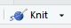

Welcome to Biol 531! This class will teach you to use general linear models to analyze data sets that are typically encountered in the biological sciences. General linear models (or GLMs for short) encompass everything from complex ANOVA designs and multiple regression, which use either categorical or numeric predictors, respectively, as well as mixes of the two.
Fortunately for us, this subject is best learned by doing, and if you have a computer capable of reading these instructions you should be able to run the software you will need to complete classwork. When I've taught this class in the past, in a classroom with students present (if you remember those days) I relied on CougarApps to deliver the software we needed - some students installed the software at home, but it wasn't necessary to do so. Now, with all of us working at home, there are some disadvantages of running the software through CougarApps, and in the long run you will be much better off installing the software at home. We will devote this session to installing the two packages you will need, R and R Studio, learning a little about what they are and how they work, and then using them to review t-tests.
Please read the whole thing
As I mentioned in the syllabus and the introduction to the class, this is a graduate level class, and is thus intended for people who need to learn statistics for their careers in biology. I put a lot of effort into writing these instructions because I think you need to know this stuff to be effective in a career as a biologist - if after a long career in the biological sciences you find that you didn't need to know something I asked you to read, you can email me (or message me with whatever method is in use in the year 2060, telepathy maybe) and if I'm still alive I'll apologize for wasting your time. For now, give me the benefit of the doubt that this is all important, and try to learn the material by reading what I wrote for you. Also, since I won't be able to answer your questions in real time while you're working on your own at home, if the only questions you need to ask me are the ones that aren't already answered in these instructions you'll make much better progress, and be much less frustrated.
A little background on R
The statistical package we are using for this class, called "R", is free of charge. The reason that it is free is interesting, and before we move on to the installation, you should know a little about the software.
R is an "open source" implementation of the S+ statistical computing language, and is available for several different computing platforms (Windows, Mac OS, Linux and other UNIX-like operating systems). Open source software is developed in a collaborative way by teams of programmers, often on a volunteer basis. There are many reasons that programmers choose to participate in open source projects (some are paid, some do it for personal satisfaction, etc.), but from a user's perspective there are several practical advantages to using open source software, such as:
- The "source code" written by the programmers can be reviewed by other programmers, or even by users if they know how, which provides a form of peer review for the code. Peer review is an important quality control mechanism in scientific work, and it has the same benefits in software development.
- Openness in the development process promotes a cooperative attitude in the users, which can lead to a tremendous amount of contributed code; the benefit of this becomes obvious both through R's impressive feature set, as well the huge number of contributed extensions that allow R to perform some very specialized types of data analysis. You can see the list of available add-on packages here, grouped by the type of problem the add-on is useful for addressing. You will find contributed packages that do anything from estimating home range sizes from animal point locations, to analysis of genomics experiments. As of this writing there are over 10,000 contributed packages available, and it is likely that whatever analysis task you encounter there will be at least one package that can perform the analysis you need.
- Open source software generally embraces open standards, including open file formats. Because of this, you will not have your data locked in a file format that can only be opened if you continue to license a particular software package. For example, if you entered all your data into a system that CSUSM licensed (we'll call it DataAnalytica), and then they let the license lapse because it was too expensive, you may not be able to open your own data files again unless you paid for a licensed copy of DataAnalytica yourself. With open data file formats any software developer can write an import program that can open the file, so you would be free to move to another software platform without losing your data.
- Because the code is contributed for free, open source software is usually distributed free of charge, which is true of R.
R is a flexible, comprehensive platform for statistical analysis and graphics. It is extremely powerful, but by itself it is not user friendly (for beginners I would go so far as to say that it's user hostile). To make it friendlier and more efficient to use, we will do all of our work in R through a program called R Studio.
A kinder, gentler interface
If you were to download, install, and run R by itself you would see a program that looks like this (on Windows, and it would be similar on a Mac, and even more rudimentary in Linux). The "R Console" is where commands are issued, and the graphical user interface (or GUI) that is distributed is very rudimentary - there are no menus for running statistical analyses or making graphs like you get with MINITAB, and all of the menu selections and buttons are for opening and saving R's "workspaces", printing output, or managing add-on packages. There are also some fairly simple things (like having more than one graph displayed on the screen at the same time) that are difficult to do.
{kind=link}
There are GUI's that have been developed that use R for all of their calculations, but provide a menu-based interface, much like MINITAB. We won't be using these, because they are limiting - particularly later in the semester when we learn about model-based inference we will make good use of the command line interface of R to run multiple analyses that have only slightly different code, and which is much more efficient with written commands than with a menu-based GUI. If you're going to use R, it's good to learn to write R code.
Between the extremes of using a full-blown graphical interface vs. running everything directly in R, there are are "integrated development environments" (or IDEs) designed to help us use R more efficiently and easily. There are several IDEs available, but in my opinion the best is R Studio. R Studio does not provide a graphical interface to R's statistical analysis, but it is a graphical interface to such useful things as accessing help files, browsing for and importing data files, managing graphs, and editing R commands. It also helps organize your work, and provides a very nice system for documenting your analysis. It is the tool I use in my own work, and it is well worth the effort to learn.
Getting started - install the software you need
The best way to use R and R Studio is to install them on your own computer. It isn't hard to get them installed, and both run on Windows, Mac OS, or Linux. If you can't install them on your own computer for some reason, it is possible to run both through Cougar Apps, but I recommend against relying on this - it will be more likely to crash, and there is an annoying bug that only crops up when you run R Studio via Cougar Apps that will make it harder for you to produce the Word documents you'll turn in for your assignments. If there is some reason you cannot install R and R Studio on your own computer please let me know, and I will post a separate lesson on running the software through Cougar Apps for you.
To get up and running, you will need to first install the most recent version of R, then install the most recent version of R Studio.
First, install R:
- Download the R installer for Windows, or for the Mac OS (if you're a Linux user, like I am, congratulations! Let me know and I'll help you with your installation, it's a snap. Most recent Chromebooks can run Linux apps, so if you're using a Chromebook we can probably get the Linux version installed on your computer too)
- Install R as you would any other program on your platform - launch the installer, and follow the directions
Next, you will want to install R Studio:
- Download the Free version of R Studio Desktop for your OS here
- Launch the installer and follow the instructions
You should now be able to start R Studio (you will see that R is installed and can be run on its own, but we will never have need to do that in this class - you will always use R via R Studio).
Starting R Studio for the first time
Now we can launch R Studio for the first time. Note that some of the functionality we will need for class is provided by external packages, called libraries in R, that are not part of the base package. If the first time you launch R Studio you are asked if you want to install some additional libraries it says it needs, say yes. This will happen occasionally as you work through the activities, but should only happen the first time you use a new feature of the software - once the libraries needed are installed they shouldn't need to be re-installed for the rest of the semester.
When you run R Studio, you will see a window that looks like this:
If you move your mouse over the picture above you'll see popups that indicate the location of the:
- Console - where R commands are entered, and output is displayed
- Menu bar - where the File menu is found (and other menus that we will learn about as needed)
- The Project menu - where projects can be created, opened, or closed
- Environment tab - where all the objects in our workspace will be displayed. The environment is active working space, in computer memory.
- History tab - a list of the commands used, which can be selected and re-used
- Files tab - where the files in the current working directory are displayed. These are files stored on disk, rather than being loaded in computer memory. We would need to load a data file from disk into memory for it to appear in the Environment, and to be usable by R. Note that the contents of your Files tab will be different, because it will reflect the files on your own computer.
- Plots tab - where any graphs we make will be viewed (and from where they can be copied for pasting, or exported to a file)
- Packages tab - where add-on packages that are currently installed are listed, and can be loaded for use
- Help tab - where help files can be searched and viewed
You will learn what to do with each of these throughout the course of the semester.
A quick note about the Help files.. you may not find them all that helpful. One of the downsides of using an open source package is that the help files are not always very beginner friendly, because they are written by the developers who are expert statisticians as well as experts in R, and they assume you are also an expert statistician who knows R and only need to know how to make the command work. The explanations are at a much higher level of sophistication than you need right now, and even the explanations of how the commands work use terms that you may not know yet. As you learn more about how R works you may be able to use them, but initially they will probably just confuse you (I've found this to be true about the statistical material in Wikipedia as well, by the way - it's written at a much higher level of sophistication than is needed by beginners. This seems to be a problem with material contributed by volunteers - the people who contribute are experts in the subject, but not experts on the needs of beginners). Consider me, and the materials I provide you, to be your Help file for now.
Start a new project
One of the best features of R Studio is that it helps organize your work, using projects. Projects are a folder that contains all of the files needed for the analysis task you are completing, including the data sets and commands you used. You will want to get into the habit of starting each assignment with a new project, so that you don't end up with a confusing mess of hundreds of files that pertain to all the different analyses we do throughout the semester.
To make a new R Studio project, do the following:
- Select "File" → "New Project..."
- In the "Create Project" window, select "New Directory".
- In the "Project Type" window select "New Project".
- In the "Create New Project" window we will name the new directory (folder) for this project, as well as specify which directory it will be under:
- Enter "review1" as the directory name - this will be the folder that's just for this activity.
- Under "Create project as subdirectory of", click "Browse" and navigate to the location you want to keep Biol 531 class material in (don't use the Trash, that's not funny) - generally, you will either want to use your Documents folder, or your Desktop. Once you've gotten to the right place, make a new folder called "Biol531" and select it.
- Back at the "Create New Project" settings window, confirm that you have review1 in "Directory name", and your Biol531 folder in the "Create project as subdirectory of" field, and then click "Create Project" to create the new project.
Once you're done you'll see that the Environment tab is blank, except for a gray "Environment is empty" label, and the "Files" tab shows a review1.Rproj file, which is the new project file that R Studio just created. Project files don't contain data sets or a history of the commands you've used, those will be in files called .RData and .Rhistory respectively, but the project file does record things like the window states - if you have a data set open for viewing when you close the project, it will be open when you start up R Studio again with this project file. The .RData and .Rhistory files will be created the first time you save, but you won't have them in your Files tab yet.
The thin status bar just above the "Name" label shows that you are looking at the contents of the new folder you just created. This is your working directory, which R will use for output files, and where it will look for any input files unless you tell it otherwise. By default, when you make a new project R sets the working directory to the project folder for you (it's possible to use something else, but if you are using projects to organize your work it's best to use the project folder as your working directory).
When I need to give you a little information that's FYI, but a bit off topic, I'll use block quotes like this one. For example, I've found that student are not always aware of the distinction between file names and filename extensions, so here's a little information about them.
Mac users may not be familiar with filename extensions (and some Windows users may not be used to seeing them if their systems are set to hide them by default). Computer files have a format that programs need to understand in order to properly read the file's contents, and there are different ways of letting programs know the format of a file. In the Mac world, the format of the file is recorded in the file itself, and when a program opens the file it reads its type from information embedded at the beginning of the file. In Windows it has been the convention to indicate the file's type using a filename extension - the filename extension is a (usually) three letters after a period at the end of the file name. For example, programs have a .exe extension, old binary versions of MS Excel files have a .xls extension, old binary versions of MS Word files have a .doc extension, and plain text files have a .txt extension. In more recent versions of Windows filename extensions can be longer than three characters, so the newer text-based Excel file format has a .xlsx extension, and the text-based Word format has a .docx extension.
Although programs do not always rely exclusively on filename extensions to know what kind of file they are opening, R Studio does. An R Studio project file has to have a .Rproj extension or R Studio refuses to treat it as a project file. I believe this is the case in the Mac as well as in Windows, even though the Mac operating system doesn't require filename extensions...so, Mac users, don't delete the .Rproj extension from your project files.
Another difference between the Mac and Windows is in the effect of using a period at the beginning of a filename - in Windows the period is just another character, and using a period at the beginning of a filename is no different than using any letter or number. The Mac uses the convention found in Unix operating systems (which the Mac OS is based on) of hiding files that have a period as the first character. Because of this difference, in Windows you will see the .RData file if you open your project in the Windows File Explorer, but on the Mac you will not see it unless you ask to show hidden files. R Studio shows hidden files in the Files tab by default, so you will see the .RData and .Rhistory files in the Files tab regardless of the OS you are using.
What's the point of hiding a file in the first place? Hidden files are often used for settings, or for other things that the user isn't intended to interact with directly but that are necessary for the program to run, and hiding the file keeps users from accidentally corrupting or deleting something that is needed for the system to run.
On both systems, once R Studio is installed, if you double-click on an .Rproj file it will start R Studio with that project open.
By the way, if you have experience with other programming languages, bear in mind that periods in R commands aren't used to indicate object properties, they are just another character - I use them a lot to separate words in names, because spaces can't be used that way in R. In R the symbol that is used to designate properties of objects is the dollar sign (we'll see this in use shortly).
Try a couple of R commands in the Console
A good way to start learning R is to enter some simple commands in the Console. R commands are entered to the right of the bottom-most prompt, which is the blue greater-than symbol, >. A simple R command is:
5+5
I'll use a font and color for commands that look like the Console to help you identify the commands you're meant to enter from these instructions - enter this command next to the prompt and hit ENTER, and you will see just below your command the output:
[1] 10
The 1 in square brackets is an index number - it just says that 10 is the first element of the output, and the value 10 is indeed 5+5.
R is object-oriented, meaning that it is designed to work in a way that is similar to objects in the real world work. What I mean by this is easier to understand through a simple example.
First, let's make a vector of numbers - a vector is just a set of elements that can be indexed with a single number. You make a vector in R with the c() function:
c(2, 4, 6, 8, 10)
If you hit Enter you will see output:
[1] 2 4 6 8 10
You still only see [1] as the index, because R only reports the index number at the beginning of the row of output, to keep the output compact. But, this is a vector with five elements - the first element has a value of 2, the second has a value of 4, and so on.
The output of our command was reported to the console, but it wasn't saved into an object. To assign the output of this c() command to an object, use the up-arrow key on your keyboard (↑) to recall the command, and edit it to read:
numbers <- c(2, 4, 6, 8, 10)
If you hit ENTER you won't see any output in the console this time, but you will now have an object in your Environment tab called numbers, and the contents of the object are displayed to the right of its name. The <- (less than followed by a dash) together make a left-pointing arrow, which is called the assignment operator in R - it tells R to take the vector we're creating on the right side of the arrow and assign it to the object with the name numbers on the left. You can use a right-pointing arrow instead; we could have used:
c(2, 4, 6, 8, 10) -> numbers
to accomplish the same thing.
The Environment tab gives you a brief preview of what the numbers object contains, and since numbers is a short vector of only five elements you can see all of it. Another way to see the contents of an object is to display it in the console by entering its name - if you type:
numbers
and hit ENTER the five numbers this object contains are displayed in the console.
You can use objects in other commands by typing their names - for example, if you want to add 10 to each number you would use:
10 + numbers
to get:
[1] 12 14 16 18 20
You can see that this command added the number we specified (10) to each element in the numbers vector. Since we didn't assign this output to an object it is reported to the Console, but it isn't saved anywhere.
Most of the time we will be using R functions rather than typing in the formulas for doing calculations. Functions are commands that have a name followed by parentheses (with no space between the name and the left parenthesis), with arguments within the parentheses that provide the function with instructions about how to work, or with data to work on. We have already used one function, the c() function, which creates a vector out of the arguments within the parentheses. For our second function, we can use summary() on our numbers object to summarize its contents:
summary(numbers)
which gives us this output:
Min. 1st Qu. Median
Mean 3rd Qu. Max.
2
4
6
6 8
10
You may recognize this from your introductory statistics class as the five number summary (minimum, first quartile, median, third quartile, maximum), along with the mean of the data - this is a useful way to summarize numeric data, and you can use it to see if the data are skewed (if the data are skewed the median and mean will not be the same, and the spacing between the median and the quartiles or the maximum and minimum will not be equal).
One of the defining characteristics of an object-oriented language like R is that the same command applied to different kinds of objects gives you different results, just like real objects in the real world. For example, if I asked you to summarize a set of data you would give me a set of summary statistics, but if I asked you to summarize a movie you would tell me about the plot - thus, even though the command you received was the same, the method you used would be selected to match what you were summarizing. Likewise, in R the same summary() function will give different results if we apply it to a vector of text, instead of a vector of numbers. To demonstrate this, make a vector of words called text, like so:
text <- c("blue","green","red","yellow","orange")
You will see that you now have a second object in your Environment called text, but its type is shown as "chr" (for "character") instead of "num" (for "numeric"), and its elements are the five colors you entered. The words are all enclosed in quotes (either single or double quotes would have worked, as long as they match) to indicate that these are text labels rather than names of objects.
What happens if you type a word without quotes? R assumes a word without quotes is supposed to be an object name, and gives you an error message when it can't find that object in your Environment. For example, if you had entered:
c(blue, green, red, yellow, orange)
you would get the message:
Error: object 'blue' not found
Because the word blue isn't quoted, R assumed it to be an object name, looked for the object called blue in your environment, and gave you an error when it couldn't find it (this was a fatal error, meaning that the function couldn't proceed to the next argument after encountering it, so it hasn't looked for green, red, yellow, or orange yet, but they too would have caused the same problem).
Get to know this error, by the way, you'll be seeing it a lot... the other very common way to get it is to misspell an object name, or to use the wrong case (lowercase when you should have used uppercase, or the reverse) in your command. Embrace it, it will be your companion (I've been using R for 20 years, and I still get plenty of them) - when you see it, start looking for typos.
R objects have methods, which are instructions for what to do when a command is applied to them. If you use the same summary() command on the text object that we used on the numbers object:
summary(text)
you will get output:
Length
Class Mode
5 character character
This output is different, because the summary method for a vector of text is different than for a vector of numbers. It wouldn't make sense to try to calculate the mean of five words, so R doesn't do that - instead, it tells us this vector has five elements in it (length of 5), and has a Class and Mode of character (don't worry about the difference between Class and Mode, it's not important to us at this point, but both are indicating this vector is a bunch of character data rather than numbers). This means that the same function can be used on objects of different type to get output that is appropriate for that object type.
A quick note about object types - if we had entered:
c("2","4","6","8","10")
then the output would have shown us the numbers with quotes:
[1] "2" "4" "6" "8" "10"
indicating that they are being treated as text labels, rather than as numbers. If we summarized this vector of numbers as text, we would get:
summary(c("2","4","6","8","10"))
Length Class Mode
5 character characterSo, entering the numbers quoted makes R treat them like text, and changes how they are summarized.
Also, notice that we didn't need to make an object of the quoted numbers before summarizing them - we could use the c() command as an argument for the summary() command instead. When R sees this, it works on the functions from the inside out - it evaluates the c() function by making a vector of quoted numbers, then passes the text vector created by c() to the summary() function, which summarizes the output.
Nesting commands is something we will do periodically, but I think it makes code more difficult to understand, and is less beginner-friendly, so we will use it sparingly (in this case, we could have assigned text-mode numbers to an object and then applied the summary command to that object, which makes it clearer what each part of the command is doing). If you do use nested functions, watch those parentheses - you need a close parentheses for every open one, and if you forget to close a parenthesis things get very confusing (R thinks you're making a multi-line command when you hit ENTER and changes the prompt to a + and awaits the rest of the command).
You can refer to the elements of an object by index number using square brackets at the end of the object name - for example, to see the fourth word stored in text you would use:
text[4]
will show you the fourth element in the text object, which is the word "yellow".
We have been working in the Console so far, but that's not how we will be completing most of our work in here. Time to move on to the assignment for today.
Add an R Markdown file template to your project
We will be using a file format called R Markdown for all of our work in this class. R Markdown is a formatting language that allows us to use symbols to indicate how an output file created from the inputs we write will look. Markdown is a actually a pun, in that it is meant to be a simplified version of a markup language (such as HTML, short for hypertext markup language, which is used to format web pages like this one). But, in addition to formatting instructions, R's markdown format allows us to mix R commands into our document, which are executed when an output file is created.
There are several major advantages to using R Markdown that make it useful not only for teaching and learning R, but as the platform for your own data analysis outside of class:
- R Markdown allows you to mix descriptive text and notes about why each step is being conducted in with the actual R code (the actual R code is entered in "code chunks" that are embedded in the document). This both helps you remember what you did, and explain it to others.
- R Markdown makes it possible to very easily repeat every step of the analysis if you discover that there was a mistake in a data file, or a mistake in an earlier command that affects later commands.
- A R Markdown document can easily be converted to another format, such as a web page, a PDF document, or an MS Word document, via a process R Studio calls knitting.
R Studio's support for R Markdown is excellent, in that it makes the code chunks in a markdown file executable - you'll be able to enter code within the Rmd file, run it, and get output from it within R Studio, just like you would if you were working in the Console.
I will be providing you with templates of R markdown documents for each exercise - this week's file is here. The file is a simple text file, so when you click on the link your browser helpfully opens it in a new tab, because that's what browsers do with simple text files. But you don't want that, you want to download it, and you want to preserve the .Rmd file extension so that R Commander can use it properly.
To download the file instead of opening it, right-click on the link (if you have a two button mouse) or CTRL+click the link (if you have a one-button mouse), and select "Save link as..." (or whatever version of this command your web browser provides). You will then be given a download window that lets you select the location to download the file - save it into your project directory (you'll see it in the Files tab of your project).
Markdown files will have the filename extension .Rmd, so I'll refer to them as rmd files for short.
Once the review1.Rmd file is in your project directory, click on its name in the "Files" tab to open it, and you should get a new tab open that shows you the contents of the file - it should look like this (you can hover over parts of the file to get popup notes about what each section is):
You will find the following:
- File header - these instructions give the title of the document, the author (which will be you, change "Your Name Here" to your name in quotes), the date (which is R's date() function, which will time stamp the document when you knit it), and the output format that will be produced when the file is knitted (which will be an MS Word document file)
- Setup code chunk - this is a series of commands that tell R Studio how to create the output document. We won't be changing anything here, leave it alone and everything will be just fine
- A section heading - to help organize the instructions I will use sections, and section headings are indicated with ## symbols. This will cause them to be converted to large, boldface characters in the knitted output file.
- Instructions, information about completing the assignment - black regular typeface
- Code chunk - code chunks are where you will enter your code and execute it. Code chunks are created with three back-ticks, ```, followed by curly brackets with the r keyword in them, {r}, and then with three more back-ticks on a line below to close the chunk. R Studio will render these in grey to make them easy to find. Additionally, I will name each code chunk to make them easier to refer to in the instructions (this one is onesample.import.data).
- A run button - at the right side at the top of the code chunk is a little green triangle that you'll click to run the code in the chunk. Output will appear just below the code chunk.
A little further down in the file you'll see the first example of the questions you need to answer for your assignments. They will all start and end with ** characters, and will say Question: at the beginning. Please write your answers next to the green > prompts just below the questions, like so:
Okay, now that your Rmd file is open, let's start using it.
Import the first data set from review_data.xls
We will be using data in this file for today's exercise. Download the file to your project folder (or, if your browser downloaded it someplace else by default, such as a Downloads folder or your desktop, move it into your project folder). You don't need to open it in Excel, but if you did you would find there are several worksheets in it, called (in order) onesample, twosample, paired, anova, and regression.
Importing data from an Excel file is done by a contributed package, called a library by R, which needs to be loaded before the import command can be run.
The readxl library may not have been installed in your initial installation. You can check this by switching to the "Packages" tab and scrolling down the list - if readxl appears there you're all set, you can skip this installation step.
If it's not there, you can install it by:
- In the "Packages" tab click the "Install" button
- In the "Install Packages" window that pops up, type readxl into the "Packages" field, and click "Install"
Once the library is installed you can move on - you will only need to install it this first time.
To import the first worksheet from review_data.xls (which is in a sheet called "onesample" within the Excel file) you need two commands, one to load the library that contains the read_excel() function, and the read_excel() function that imports the data itself. To see how this works, in the console write:
library(readxl)
read_excel("review_data.xls", sheet = "onesample")
The read_excel() function takes the name of the Excel data file as its first argument, and the name of the worksheet within it to import as its second argument.
The output of this read_excel() function will look like this:
# A tibble: 25 x
1
Body.temperature
<dbl>
1
98.7
2
98.9
3
98.5
4
98
5
98.9
6
98.5
7
98.2
8
97.9
9
98.4
10
98.5
# … with 15 more rows
A tibble is a dataset format that R uses in which variables are in columns, and data points are in rows. There are 25 data points and one variable (called Body.temperature, as the column name indicates) in this dataset, so it tells us this is a 25 x 1 tibble.
Tibbles are a newer version of the standard R dataset format, called a data frame. Data frames are also datasets arranged in rows and columns, with each column representing a variable, but they lack a few features that tibbles provide. From our perspective data frames and tibbles are interchangeable, there are no features of tibbles that we require that data frames lack, so either one is fine. However, because tibbles are newer, not every R function has been rewritten to work with tibbles, and commands may fail for no apparent reason if we don't change the dataset to a data frame. So, modify the import command in your onesample.import.data code chunk to read:
data.frame(read_excel("review_data.xls", sheet = "onesample"))
The output is different, the entire data set is shown, with the first five rows of it shown here:
Body.temperature
1
98.7
2
98.9
3
98.5
4
98.0
5
98.9
You can see that we're nesting the read_excel() function within a new function, data.frame(), which takes the tibble created by read_excel() and converts it to a data frame. Your onesample dataset will now be a data frame, and any of the commands we use in class will work with it.
In R issuing commands without assigning the output to an object displays the results, but doesn't save them. To save the imported data into an object we will make an object called onesample and assign the imported data frame into it. To get this to happen when you complete your assignment and knit the document into its final form, you will need to add these commands to your Rmd file, in the onesample.import.data chunk:
library(readxl)
onesample <- data.frame(read_excel("review_data.xls", sheet = "onesample"))
If you run the code chunk (by hitting the green triangular Run button) it should execute successfully, with no errors, and you will be rewarded with a dataset called onesample in your environment, which is in the data frame format.
Before we move on, a quick aside about about arguments in functions...
Note that the read_excel() function has two arguments, which are the name of the Excel file ("review_data.xls"), and the worksheet to be imported (sheet = "onesample"). Arguments are sometimes optional, and there are default values that R will use if you don't specify any. The read_excel() function has a lot of arguments - for example, if we want to tell the function to use the first row of each column as the column name in the R dataset, we could use the command:
onesample <- read_excel("review_data.xls", sheet = "onesample", col_names = TRUE)
But, the default is to use the first row of the worksheet as column names, so if we omit this argument we get column names anyway.
Also, note that the sheet and col_names arguments are structured as argument_name = value (it's sheet = "onesample", and col_names = TRUE in this case), but the name of the data set doesn't have an argument name. There is a default order to the arguments, and if you don't use an argument name then the order of the arguments has to be correct. For example, the default is for the first argument to be the name of the file, and the second argument to be the name of the worksheet within the file to import, so this command will also work:
onesample <- read_excel("review_data.xls","onesample")
If we use argument names we can reverse the order and it will still work:
onesample <- read_excel(sheet = "onesample", path = "review_data.xls")
gives us the same result as the other two versions.
But, if we reverse the order without argument names, we get an error:
onesample <- read_excel("onesample", "review_data.xls")
gives us the error:
Error: `path` does not exist: ‘onesample’
The read_excel() function assumed that onesample was the name of the Excel file because it was the first argument with no argument names to tell it this was actually the worksheet name.
Fair warning: do not just copy and paste commands from this page into R
At this point some of you clever students may have already realized that you can complete assignments quickly by just copying my commands and pasting them into R. The temptation to do this is great, but bear in mind that when you have to analyze data on your own (as you will have to on exams) this method won't be available, and R is fussy about command syntax. If you don't practice entering commands (and interpreting the often cryptic and unhelpful error messages R gives you when you make a mistake) you will have trouble on exams when you don't have pre-written commands to use. Take your time and practice typing commands now, it's good for you.
Trying to spot your own errors is good for your learning, so do try to figure out what's wrong with your commands before asking for help.
But, if despite your best efforts you just can't figure out why a command is failing, Rmd files make it really easy for me to help you. All you will need to do is email me your Rmd file as an attachment and I will be able to spot the problem. This is tremendously helpful, because the error you're receiving in one command often occurs because you made a mistake in a previous step - when you send me your Rmd file I can see everything you've done, and quickly locate the issue.
Your first analyses with R: reviewing t-tests
For the rest of the assignment, we will review various kinds of t-tests that you learned about in your introductory statistics class. The three kinds of tests we will review are a) a one-sample t-test, which compares the mean of a sample of data against a hypothetical mean for the population they were sampled from, b) a two-sample t-test, in which the means of two independent samples are compared together, and c) a paired t-test, in which the differences between two non-independent samples are compared against a mean of 0.
If you do not remember how t-tests work, there will be a recorded lecture for you to watch for review. If you need some more review you can click on the links:
Procedure Purpose Data type One-sample t-test Compare a single mean to a specified value Numerical (continuous) Two-sample t-test, paired t-test
Compare means between two independent sets of observations Numerical (continuous) response, categorical grouping variable Paired t-test Compare mean of differences between two logically paired set of observations to 0 Differences between pairs of numerical (continuous) measurements The hyperlinks for each procedure take you to background material we use in Biol 215 - please read through them to refresh your memory if you aren't prepared to interpret t-test output.
Next week we will be reviewing one-way ANOVA and simple linear regression, and you can find Biol 215 material at the links for those topics.
If you need further review, have a look at this information on: variable types, accuracy and precision of data, graphical summary of data, numerical summary of data, probability, normal distributions, estimates from samples and confidence intervals, and transformations.
The following are additional Biol 215 materials that you won't need to review for this class, but are made available to you here for the sake of completeness, if you wish to review them: nonparametric statistics, correlation analysis, Chi-square goodness of fit, and Chi-square contingency table analysis.
For this exercise, we will test whether body temperature is different from 98.6 degrees. Imagine these data represent a set of body temperature measurements from a group of CSUSM statistics students. Because you have a single sample of data, with a single mean body temperature, you will compare the mean of the data to a hypothetical value you specify using a one-sample t-test.
1. Check the assumptions of the test. If you recall, a one-sample t-test assumes that the data are normally distributed. We can check this using the Shapiro-Wilk normality test - it assumes the data are normally distributed as the null hypothesis, so a p-value over 0.05 indicates normality. Enter the following in your R markdown file, in the onesample.normality code chunk:
shapiro.test(onesample$Body.temperature)
The command is shapiro.test(), and it takes one argument, which is the variable that we want to test for normality. Note that we had to tell R both which data set to use, and which variable to use - if you tried shapiro.test(onesample) it would not work, even though there is only one variable, and if you tried shapiro.test(Body.temperature) it would not work because R wouldn't know which data set contained this variable, even though there is only one in the workspace. R is very literal.
You'll see from the output of shapiro.test() that p is 0.1131, so we pass the normality assumption.
This style of referring to a column in a data set - with the name of the data set followed by the name of the variable, separated by a dollar sign - is common, but not the only way available. We can refer to parts of a data set with a [row, column] index instead, like so (enter this in the console - in general, when I want you to try out something to learn how a function works, I'll have you type it into the console, and when I want it to be in your assignment I'll have you write it into a code chunk in your Rmd file) :
shapiro.test(onesample[ , 1])
Leaving the row number blank tells R to use all of the rows, but the 1 in the column index tells R to use the first column in onesample for the test. Finally, we can use the with() command to identify the data set, and then nest the shapiro.test() command within it, like so (in the console):
with(onesample, shapiro.test(Body.temperature))
I personally prefer the first or third method, because they make the commands easier to understand - both the name of the data set and the name of the variable appear in them, and it's clear which is which, whereas just using the index number omits the name of the variable from the command and makes it less clear what is going on.
2. Before conducting a one-sample t-test, look at your data! A good choice for small to medium sized data sets (100 observations or less) is a "strip chart", which plots the individual data points (much like MINITAB's individual value plots). To make one, use the command (in your R markdown file):
stripchart(onesample$Body.temperature, xlab = "Temperature")
You should have a plot that shows each individual data value along a horizontal line. The xlab argument sets the x-axis label.
Another good type of graph to use to see the distribution of the data is a box plot, which you can get with (in your R markdown file):
boxplot(onesample$Body.temperature, ylab = "Temperature")
Box plots show the smallest and largest non-extreme data values as whiskers, and three quartiles (the 1st, 2nd, and 3rd) as a box with a line in the middle. Quartiles are the 25th, 50th, 75th, and 100th percentiles, meaning that they are the values below which 25%, 50%, 75%, and 100% of the data values fall. The 2nd quartile is also called the median, and the 4th quartile is the maximum data value. The difference between the 3rd and 1st quartile is called the interquartile range, and if there are any data values that are more than 1.5 times the interquartile range away from the bottom or top of the box they are considered extreme values. Extreme values are not necessarily errors, but they can cause problems for data analysis and boxplots flag them by plotting them with circles below the lower whisker or above the upper one. You can see there is one extreme value below the lower whisker, but none above, so the circle is the minimum, and the upper whisker is the maximum for the data set.
3. Now you're ready to conduct the one-sample t-test. The command is (in your R markdown file):
t.test(onesample$Body.temperature, mu = 98.6)
Output is reported below the code chunk, and should look like this.
{kind=link}
This command requires a data set to work on, and a numeric value to compare the sample mean of the data against - the first argument is the data set, and mu = designates the numeric value that the mean of the dataset will be compared against.
One of the choices we need to make when we do hypothesis testing is whether we want to do one-tailed or two-tailed testing. If we do one-tailed testing we are only interested in detecting a difference in a particular direction - if we were measuring these temperatures to find out if studying statistics raised body temperatures we would only be interested in whether the sample mean is higher than 98.6, but since a value of 98.6 or anything less than 98.6 would indicate that statistics doesn't raise body temperature we would only need to test for higher than expected means. To test just for a change in one direction we could do a one-tailed test. If instead we're checking whether 98.6 is an accurate normal body temperature, then differences that are either above or below the mean are of interest, and we would use a two-tailed test. We specify whether we are doing a one-tailed or two-tailed test by specifying the alternative hypothesis - if we are only interested in testing for increases in body temperature we would use the command (in the console):
t.test(onesample$Body.temperature, mu = 98.6, alternative = "greater")
The default is to do two-tailed testing, so we don't need to specify an alternative if we are interested in whether the sample mean is different from the null value in either direction.
If this distinction still does not make sense to you, read the review material on one-sample t-tests, linked at the top of the page.
Two-sample t-test
Charles Darwin was not only an important theoretician, he conducted many experiments to test his ideas on evolution by natural selection. In the review_data.xls file, on the sheet called "twosample", you have some of Darwin's data on an experiment comparing the heights of a species of plant, the "mignonette", that can reproduce either by self-pollinating, or by using pollen from other individuals. Darwin experimentally self-pollinated some plants and crossed others, and collected the resulting seed. He then planted seeds from each pollination treatment group, and measured the heights of the offspring.
You now have data from two different groups, and would like to know if their means are different enough to conclude they come from statistical populations with different means - remember, the sample means are almost certainly not identical, but that's not what we are testing (why would we test if the sample means are different when they obviously are not?).
1. In your R markdown file enter the import command needed to import the sheet called "twosample" from the file "review_data.xls" into a data set called "twosample" (add this to your R markdown file). I won't give you the commands, start with the command you used above and modify it to work for the twosample worksheet.
Once twosample is in your environment, click on it to open the data set for viewing.
You'll see that we have two variables: Height (the height of the plants in cm) and Pollination (a grouping variable indicating if the plant was crossed or selfed). This arrangement of data, with groups indicated by a column called a "factor", is referred to as "stacked" data, and it's the arrangement we will use throughout the class.
2. To make a strip chart of the height data grouped by pollination use the command (in your R markdown file):
stripchart(Height ~ Pollination, data = twosample)
Note that this command allows us to use a formula statement to say that we want to plot Height as a function of Pollination group, with the tilde character (hold down SHIFT and hit the key to the left of the 1 on your keyboard) taking the place of an equal sign. This style of formula statement is very common in R, we will be using it a lot.
The tilde is used instead of an equal symbol because the equal symbol is also used for assignment in R. Like the <- assignment operator = assigns anything on the right side to the object on the left.
What if we want to make a comparison in R? Usually we would ask if a = b, but we can't do that because that would assign the value of b to a. In R, we make comparisons with two equal symbols - to compare a to be we would use a == b
The second argument in the t.test() function identifies the data set, so we don't need to use twosample$Height or twosample$Pollination to identify the data set to use.
To make a box plot for these data use the command (in your R markdown file):
boxplot(Height ~ Pollination, data = twosample, ylab = "Height (cm)")
This command also uses the formula notation to group the heights by pollination group, and then adds an argument to set the label on the y-axis to "Height (cm)".
3. We need to test the data for normality, but we need to do this by group - if the two pollination types have a different mean then the data may be bimodal when the groups are combined, even though they are normal when they are split.
R is able to apply functions to subsets of data using the tapply() function. The tapply() function takes a column of data as its first argument, a grouping variable as its second argument, and a function to be applied to each group as the third. We can do Shapiro-Wilk tests on each pollination group using (in your R markdown file):
with(twosample, tapply(Height, Pollination, shapiro.test))
You will see that R reports two different tests, one for each pollination group. We pass for both of them.
4. Now we should test the assumption of equal variances. Equal variances between groups is an assumption of the test, meaning that we can only trust our test of differences between the means to be accurate if we have equal variances (equal variances is not the biologically interesting question, therefore, we're just testing whether it's okay to use the t-test).
To run Bartlett's test of homogeneity of variances (HOV) use the function (in your R markdown file):
with(twosample, bartlett.test(Height, Pollination))
If you fail to reject that hypothesis (that is, if p > 0.05), consider the variances the same.
5. Now that we know that we meet the normality and HOV assumptions we can test for differences in mean height between groups. The same function is used, but with different arguments (in your R markdown file):
t.test(Height ~ Pollination, var.equal = TRUE, data=twosample)
This version of the t.test() function says that Height is a function of Pollination group, that the test should assume equal variances, and that the data set containing the variables is twosample.
Note that in addition to the p-value, R reports a confidence interval for the difference between the means. If it has a negative lower bound and a positive upper bound the difference between the populations could be zero, and you would fail to reject the null. If it has two negative or two positive bounds then zero is not included in the interval, and you could reject the null.
Paired t-test
A classic paired data set is one in which the same experimental subjects are observed in two different experimental conditions. You will use data on CO2 uptake by a single set of 12 plants grown in two different ambient CO2 concentrations (250 ppm and 500 ppm). The goal is to compare the uptake between these two concentrations, but since each of 12 plants are tested at each concentration, we would expect the uptake values not to be independent, because uptake at 250 ppm and at 500 ppm are likely to be more similar for the same plant than for other plants in the data set. This causes two different problems: a) if we treat the observations as independent, we will use a greater degrees of freedom than we actually have, which will make our p-values inaccurate, and b) a small but consistent increase in uptake from 250 ppm to 500 ppm could be obscured by a large amount of variation among plants. We will use a paired t-test to correct for this lack of independence, and solve both of these problems.
1. Import the sheet called "paired" into an R data set also called "paired" (put the needed command into your R markdown file).
2. We should look at the data, but we have a small problem - our charts want the data to be in a stacked arrangement, but these data are arranged side by side to facilitate the paired t-test. Stacking the data would mean putting both sets of uptake values in a single column, with a second column that indicates the CO2 treatment. R has a function that does this for us (enter in the console):
stack(paired, c(2,3))
This command takes the data set to be stacked as the first argument, and a vector of column numbers that should be stacked. Vectors are a single row or a single column of values, and R creates them using the c() command. The first column of the data set is just a plant ID label, which we don't need to plot, so we are just stacking the second and third columns. You'll see the result in the console.
We have a small problem that we are only seeing the result in the console - a new data set is not created, because we didn't assign the result to a new object. We can fix this by recalling the command you just issued using the up arrow key, and then modifying the command like so (in the R markdown file, paired.stack chunk):
stack(paired, c(2,3)) -> co2.stacked
When you assign output to an object it is not reported below the code chunk, but you should now see an object called co2.stacked in your environment. To see it in the console you can write its name at the command prompt (in the console):
co2.stacked
and its contents will be displayed. If you click once on co2.stacked in the Environment tab it will open in a data viewer tab so you can scroll through the data.
3. The column names are not very useful - stack() assigned the name "value" for the uptake data, and "ind" (short for "index") for the CO2 treatment. We can use the command colnames() to extract the column names that are currently assigned (in the console):
colnames(co2.stacked)
which will display the column names in the console. We can also use colnames() to change the names to other values with the command (in the R markdown file, paired.stack chunk, in the line below your stack() function):
colnames(co2.stacked) <- c("Uptake", "Treatment")
This command assigns a vector with "Uptake" and "Treatment" as the column names for co2.stacked. If you have the stacked data open in a viewer you'll see the column names update to these new values.
4. You now have a data set that you can use to make a strip chart and a box plot by group, so do so (in your R markdown file) - use the command you used for the two sample dataset as an example, and modify it to work with this stacked dataset.
You'll see that both of these plots show a small difference in the distribution of the data, but with lots of overlap. Remember, though, that the data are measurements of the same plants under two different CO2 concentrations, and the we're really only interested in whether each plant changes their CO2 uptake when the environment changes - we just need to know if the differences between plants are different from 0 on average.
To get differences, we can use R's ability to operations on entire vectors of data - we can calculate differences between the two different CO2 treatments with the command (in the console):
with(paired, uptake_500 - uptake_250)
The differences between each row of the paired data set is shown in the console. To add these differences back into the paired data set, recall the command and change it to (in the R markdown file, paired.diffs chunk):
with(paired, uptake_500 - uptake_250) -> paired$diffs
Your paired data set now has an additional column called "diffs", containing the differences. If you click on the data file name you'll see the new column.
You can do a boxplot of these differences, and you'll see that all of them are positive (in the R markdown file).
5. To check the normality assumption of a paired t-test, conduct a Shapiro-Wilk test on the differences you just calculated (in the R markdown file).
6. Now that you know you meet the normality assumption, conduct a paired t-test using the same function, but with different options (in the R markdown file):
with(paired, t.test(uptake_250, uptake_500, paired = TRUE))
The paired t-test compares the mean of the differences between the two columns of data against 0, using a one-sample t-test.
Note that since we calculated the differences for plotting and to check normality we could just as easily have done this analysis as a one-sample t-test. In the console see if you can do a one-sample t-test on the diffs, and confirm that the results are the same as you obtained using the paired t-test (same df, same t-value, same p-value).
Knit the output file
When you are done with the exercise, your R markdown file can be "knit" into a Microsoft Word document, which will contain all the code you used and all the output, formatted nicely into a report. You can open the file, edit it, annotate it if you like, and it will be this file you upload to complete the assignment.
All you need to do is to find the "Knit" button above the R markdown window, . Clicking this once will create the default Word document (which is specified in the header of your markdown file), but if you click and hold you'll see that you can use the same markdown file to make other types of files, such as a web page (html), or a pdf document.
You want a Word file though, so click the Knit button once to create it. The first time you do this R Studio may ask to install some additional packages - let it do so, and when it's done it will knit the file. The file will be in the same project folder as review_data.xls and review1.Rmd, and it will be called review1.docx (it will appear in the Files tab). RStudio will also open Word so you can see the document - it's very pretty.
Upload this review1.docx file to the course web site to complete the assignment. Don't worry about making the filename different to identify that it's yours - the file has your name in it and will be attached to your account on the class web site - sticking with the default review1.docx file name is fine.
Additional help with R
There are several good, free tutorials on R. A good place to look for them is the CRAN web site - go to http://cran.r-project.org, and find the "Documentation" links on the left side of the page. The "Manuals" are meant as complete references, but are not written as tutorials. The "Contributed" documentation section gives several good introductory documents that you can check out. Some particularly newbie friendly ones are "R for Beginners", and "Kickstarting R". Another good, fairly comprehensive document that uses biological examples is "Statistics using biological examples".
The graphical interface we're using, R Commander, is a "contributed package" that isn't a standard part of R. Consequently, it will most likely not appear in the tutorials linked above. If you want to learn more about how to use it, you can try "Getting Started with the R Commander" (written by the guy who programmed R Commander), or possibly "R Commander: An Introduction" (written by some other person).
If you like actual dead-tree books better, there is now an "R for Dummies" book (if your pride allows it). A couple other good options include "Introductory Statistics With R", and "A Beginner's Guide to R", which cover similar ground as the Dummies book without requiring you to eat humble pie. Finally, "R in a Nutshell" is a good reference, but with less emphasis on teaching.